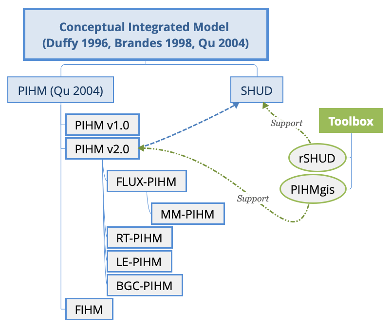

绪论
本书是SHUD模拟系统的用户手册，详细解释SHUD模型的发展、理论、技术细节、应用案例。
水文非结构域模拟器(Simulator for Hydrologic Unstructured Domains, SHUD - 音“书得”) 是一个多过程、多尺度、数值方法、地表-地下全耦合、分布式水文模型(Shu, Ullrich, and Duffy 2020)。模型使用了有限体积法(Finite volume method, FVM)求解水文常微分方程。
rSHUD 是一款以R库开发的开源GIS和水文分析的工具集，用于支持SHUD和其他类似水文模拟。依托强大的R库，rSHUD的功能可分为：空间数据处理与分析，全球开放地理数据获取，SHUD数据前处理，SHUD数据后处理，水文数据分析，二维/三维数据可视化等。
SHUD和rSHUD共同组成了SHUD模拟系统。SHUD模型系统的网站为https://www.shud.xyz。用户可通过SHUD网站关注SHUD模型的发展、更新、应用和近期新闻，也可以通过网站获取源代码。
站在巨人的肩上
首先，SHUD模型基于Christopher Duffy教授在1996年提出的“两态集成平衡”(two-state integral-balance)概念模型(Duffy 1996)，以及PIHM(Penn State Integrated Hydrologic Model)模型Bhatt (2012)的设计和应用经验。“两态集成平衡”理论将土壤水层分为未饱和和饱和层，并使用局部平衡公式计算水流。
SHUD和PIHM都是多尺度、多过程、数值方法、地表-地下全耦合、分布式水文模型。
继承和PIHM中“两态集成平衡”概念模型思想，并吸收PIHM应用中的经验，舒乐乐(2020)全新开发了SHUD模型。SHUD的源代码全部为新代码，防止代码继承而引入旧漏洞，并且在模型中的流域拓扑结构、数据结构、算法、公式应用、迭代过程、输入输出等方面有较大改进（文后会详细列举）。因此，SHUD由PIHM发展而来，但与PIHM已经在概念、结构、计算和格式上完全不兼容，应作为另一个独立模型看待。
PIHM模型简史
Duffy于1996年构建了计算土壤水和地下水动态的“二态集成平衡”模型(Duffy 1996)；该模型中，垂直方向分为饱和与非饱和层，局地水量平衡公式集成计算水的交换。“二态集成平衡”模型在简化水文动态的同时，保留了自然中时空尺度对产流的响应。 之后Brandes 和Duffy 等 (Brandes, Duffy, and Cusumano 1998) 继承了“二态集成平衡”模型并使用FEMWATER实现了数值方法计算山坡-河流尺度上水双向交互。 2004年，曲轶众(Qu 2004)在算法中加入了蒸散发过程和河道计算，并发布了Penn State Integrated Hydrologic Model (PIHM)——PIHM的1.0版本，是PIHM发展中最重要的里程碑，从此PIHM成为流域模拟的通用研究工具应用在不同尺度的流域中。
此后， Kumar， Bhartt和Duffy (Mukesh Kumar 2009; Mukesh Kumar, Duffy, and Salvage 2009)) 相继开发了PIHM v2.0和PIHMgis。 PIHM v2.0增强了模型中陆面过程和土地利用影响水文过程的计算过程。Gopal Bhartt 开发了生成PIHM输入、读取输出和分析结果的软件PIHMgis。PIHMgis分别出现了PIHMgis v2.3和v3.0两个常用版本，PIHMgis v2.3使用了QGIS内核，因此在部分平台上更新困难。 PIHMgis v3.0的支持性更好，可支持Mac或Windows操作系统。(Leonard and Duffy 2013) 开发了HydroTerre平台，为PIHM和其他水文模型提供基础的空间和时间数据。 PIHMgis和HydroTerre的出现极大地推动了PIHM模型在全美和全球的应用。
受益于PIHM模型的诸多优势，PIHM家族出现了若干耦合模型。 例如，Flux-PIHM将NOAH陆面过程模型与PIHM模型耦合，更精确地计算陆面与大气的能量交换、 蒸散发和积雪 (Shi, Baldwin, et al. 2015; Shi et al. 2014)。张宇等(Zhang, Slingerland, and Duffy 2016) 开发了LE-PIHM, 模型万年尺度由水文过程造就的地形地貌变化。 RT-PIHM 和 RT-Flux-PIHM(Bao 2016; Bao et al. 2017)实现了化学反应与PIHM水文过程的耦合。由石宇宁领导的研究正试图将各种PIHM相关模型作为模块统一建立多模块PIHM系统（Multi-Module PIHM， MM-PIHM， https://github.com/PSUmodeling/MM-PIHM）。 除此之外，仍有多个与PIHM耦合的研究正在进行，如与湖泊、农业、经济的耦合研究。
在PIHM模型快速发展的同时，Kumar(Mukesh Kumar 2009)，在PIHM v2.0基础上设计了 Finite volume-based Integrated Hydrologic Modeling (FIHM)模型，使用二阶精度和三维流动模拟水文过程。
下图展示了PIHM模型的发展和分支：

Figure 1: PIHM和SHUD模型的发展和分支。 PIHMgis和rSHUD分别是支持PIHM和SHUD的数据前后处理工具。 PIHMgis使用C++写成，rSHUD使用R.
重要时间线
曲轶众 (Qu and Duffy 2007; Qu 2004)在宾州州立大学博士期间，于其博士论文中基于“两态集成平衡”理论，开发并验证了PIHM模型。
此版本作为PIHM v1.0出现，成为PIHM模型的核心。
Gopal Bhartt博士 (Bhatt 2012) 使用C++和Qt库建立了PIHMgis工具。PIHMgis在Qgis平台上实现了空间数据前处理、模型运行、结果数据分析的功能，有效地降低了初学者的使用门槛，极大地推动了模型的应用。
Yuning Shi博士领导和开发了MM-PIHM (Multi-Module PIHM)模型平台——集成并融合了PIHM家族的若干耦合模块。
诸如RT-PIHM, LE-PIHM, flux-PIHM, BGC-PIHM等等。 得益于科学家们的周密合作，MM-PIHM的多学科耦合实践很好地证明和实现了PIHM最初作为科学社区模型的理念。
舒乐乐博士继承了PIHM的理念和经验，开发了SHUD模型(Shu, Ullrich, and Duffy 2020)，并开发了支持SHUD模型数据前后处理、空间数据分析、模型自动校准、结果可视化的全套工具集。SHUD建模系统支持可重复、高效、全自动部署于全球大部分流域。
SHUD与PIHM的区别
SHUD模型是PIHM的一个继承者，继承了1996年由Duffy提出的二相耦合概念模型，并且继承了部分PIHM 1.0和2.0当中的成熟经验。之后作者修改了模型中部分过程、计算和实现语言，SHUD模型已经与PIHM模型不再兼容，因此使用新名称对模型进行命名。
SHUD与PIHM的区别：
- SHUD使用C++面向对象编程，将计算封装起来，避免内存泄露等PIHM常见问题。
- SHUD使用了不同的坡面与河道的交互。PIHM中河道与两个三角形坡面相邻，带来了四个问题：1） 河道的长度极大的影响和模型的计算单元数量，用户不得不在简单河道和计算单元数量之间做权衡。2） 平原地区的河道绵延曲折，导致大量微小三角形单元和非结构三角形，使得模型计算容易突破库容常数而使得模型变慢。3）容易出现局部积水点（sink），个别积水点就可以极大地拖慢整个流域的求解速度。 4）为解决以上问题，模型用户需要反复手动对河流形状进行修改，降低了模型的可重复性和效率。SHUD的河道覆盖在三角形单元之上，坡面和河道水量交换给予河道水位和地下水、地表水的坡度计算，整体计算效率显著提升。
- SHUD模型中计算入渗、地下水补给和河流交互的公式与PIHM不同。公式的采用基于经验和模型设计时的需求。未来将会就此进行模型对比，展示两个模型的差异。
- SHUD模型确保了计算中的水量平衡。
在技术层面SHUD模型：
- 支持CVODE 5.0及以上版本
- 支持OpenMP并行计算
- 采用和与PIHM不同的数据结构和算法
- 支持可读性强地输入和输出文件
- 统一的时间序列数据操作
- 指定步长输出模型状态，作为后续模型运行的初始条件。
- 自动检查模型的输入数据和参数的有效性
- 加入模型调试选项，监控每一步长内的非法值和内存操作。
SHUD模型的特点
- SHUD模型是一个物理性分布式水文模型，精确描述流域水文物理过程。物理性模型可用于无观测流域的模拟研究。
- SHUD表达了流域中的空间异质性。水文空间异质性的表达有利于耦合模型研究，例如详细描述了水从山坡回流的路径，有利于生物化学、污染物运动、地貌变迁、湖泊生态等等方面的耦合研究。
- SHUD是全耦合模型，在每一时间不步长所有水文状态量都要满足基本求解器的收敛性要求，保证了水文便利在空间上的连续性、一致性和收敛性。
- SHUD模型使用CVODE 5.0+(Hindmarsh et al., 2005) 作为常微分方程求解器。 CVODE由劳伦斯利弗莫尔国家实验室开发和维护。
- SHUD可使用灵活的时间和空间步长，适应多种尺度的模拟需求。
- SHUD支持高空间时间分辨率的洪水模拟，也支持长时间序列的气候和土地利用变化研究。
- SHUD是开源模型，任何人（非商业用途）都可使用、修改此模型。
参考文献
当利用SHUD模型从事科研工作时，请依次合理引用以下三篇文章：
L. Shu, P. A. Ullrich, C. J. Duffy, Simulator for Hydrologic Unstructured Domains (SHUD v1.0): numerical modeling of watershed hydrology with the finite volume method. Geosci. Model Dev. 13, 2743–2762 (2020).
Y. Qu, C. J. Duffy, A semidiscrete finite volume formulation for multiprocess watershed simulation. Water Resour. Res. 43, 1–18 (2007).
C. J. Duffy, A Two-State Integral-Balance Model for Soil Moisture and Groundwater Dynamics in Complex Terrain. Water Resour. Res. 32, 2421–2434 (1996).
以下为时间排序的SHUD相关研究文章：
- (Qu 2004)
- (Qu and Duffy 2007)
- (Li 2008)
- (M. Kumar, Duffy, and Reed 2004)
- (Mukesh Kumar, Bhatt, and Duffy 2009)
- (Yu et al. 2015)
- (Yu et al. 2014)
- (Li and Duffy 2011)
- (Shi, Baldwin, et al. 2015)
- (Shi, Davis, et al. 2015)
- (Bhatt, Kumar, and Duffy 2014)
- (Shu, Ullrich, and Duffy 2020)
Bao, Chen. 2016. “Understanding Hydrological And Geochemical Controls On Solute Concentrations At Large Scale.” PhD thesis, Pennsylvania State University.
Bao, Chen, Li Li, Yuning Shi, and Christopher Duffy. 2017.
“Understanding watershed hydrogeochemistry: 1. Development of RT-Flux-PIHM.” Water Resources Research 53 (3): 2328–45.
https://doi.org/10.1002/2016WR018934.
Bhatt, Gopal. 2012. “A distributed hydrologic modeling system: Framework for discovery and management of water resources.” PhD thesis, Pennsylvania State University.
Bhatt, Gopal, Mukesh Kumar, and Christopher J. Duffy. 2014.
“A tightly coupled GIS and distributed hydrologic modeling framework.” Environmental Modelling and Software 62: 70–84.
https://doi.org/10.1016/j.envsoft.2014.08.003.
Brandes, David, Christopher J. Duffy, and Joseph P. Cusumano. 1998.
“Stability and damping in a dynamical model of hillslope hydrology.” Water Resources Research 34 (12): 3303–13.
https://doi.org/10.1029/98WR02532.
Duffy, Christopher J. 1996.
“A two-state integral-balance model for soil moisture and groundwater dynamics in complex terrain.” Water Resources Research 32 (8): 2421–34.
https://doi.org/10.1029/96WR01049.
Kumar, M, C J Duffy, and P M Reed. 2004.
“Enhancing the performance of feature selection algorithms for classifying hyperspectral imagery.” In
Geoscience and Remote Sensing Symposium, 2004. IGARSS ’04. Proceedings. 2004 IEEE International, 5:3264–3267 vol.5. C.
https://doi.org/10.1109/IGARSS.2004.1370398.
Kumar, Mukesh. 2009. “Toward a hydrologic modeling system.” Ph.D, Pennsylvania State University.
Kumar, Mukesh, Gopal Bhatt, and Christopher J. Duffy. 2009.
“An efficient domain decomposition framework for accurate representation of geodata in distributed hydrologic models.” International Journal of Geographical Information Science 23 (12): 1569–96.
https://doi.org/10.1080/13658810802344143.
Kumar, Mukesh, Christopher J. Duffy, and Karen M Salvage. 2009.
“A Second-Order Accurate, Finite Volume-Based, Integrated Hydrologic Modeling (FIHM) Framework for Simulation of Surface and Subsurface Flow.” Vadose Zone Journal 8 (4): 873–90.
https://doi.org/10.2136/vzj2009.0014.
Leonard, Lorne, and Christopher J. Duffy. 2013.
“Essential Terrestrial Variable data workflows for distributed water resources modeling.” Environmental Modelling & Software 50 (December): 85–96.
https://doi.org/10.1016/j.envsoft.2013.09.003.
Li, Shuangcai. 2008. “INTEGRATED MODELING OF MULTI-SCALE HYDRODYNAMICS, SEDIMENT AND POLLUTANT TRANSPORT.” PhD thesis.
Li, Shuangcai, and Christopher J. Duffy. 2011.
“Fully coupled approach to modeling shallow water flow, sediment transport, and bed evolution in rivers.” Water Resources Research 47 (3): 1–20.
https://doi.org/10.1029/2010WR009751.
Qu, Yizhong. 2004.
“An integrated hydrologic model for multi-process simulation using semi-discrete finite volume approach.” PhD thesis.
http://gradworks.umi.com/31/72/3172997.html.
Qu, Yizhong, and Christopher J. Duffy. 2007.
“A semidiscrete finite volume formulation for multiprocess watershed simulation.” Water Resources Research 43 (8): 1–18.
https://doi.org/10.1029/2006WR005752.
Shi, Yuning, Douglas C. Baldwin, Kenneth J. Davis, Xuan Yu, Christopher J. Duffy, and Henry Lin. 2015.
“Simulating high-resolution soil moisture patterns in the Shale Hills watershed using a land surface hydrologic model.” Hydrological Processes 29 (21): 4624–37.
https://doi.org/10.1002/hyp.10593.
Shi, Yuning, Kenneth J. Davis, Fuqing Zhang, Christopher J. Duffy, and Xuan Yu. 2014.
“Parameter estimation of a physically based land surface hydrologic model using the ensemble Kalman filter: A synthetic experiment.” Water Resources Research 50 (1): 706–24.
https://doi.org/10.1002/2013WR014070.
———. 2015.
“Parameter estimation of a physically-based land surface hydrologic model using an ensemble Kalman filter: A multivariate real-data experiment.” Advances in Water Resources 83: 421–27.
https://doi.org/10.1016/j.advwatres.2015.06.009.
Shu, Lele, Paul A Ullrich, and Christopher J Duffy. 2020.
“Simulator for Hydrologic Unstructured Domains (SHUD v1.0): numerical modeling of watershed hydrology with the finite volume method.” Geoscientific Model Development 13 (6): 2743–62.
https://doi.org/10.5194/gmd-13-2743-2020.
Yu, Xuan, Christopher Duffy, Doug C. Baldwin, and Henry Lin. 2014.
“The role of macropores and multi-resolution soil survey datasets for distributed surface-subsurface flow modeling.” Journal of Hydrology 516: 97–106.
https://doi.org/10.1016/j.jhydrol.2014.02.055.
Yu, Xuan, Anna Lamačová, Christopher Duffy, Pavel Krám, and Jakub Hruška. 2015.
“Hydrological model uncertainty due to spatial evapotranspiration estimation methods.” Computers & Geosciences 90: 90–101.
https://doi.org/10.1016/j.cageo.2015.05.006.
Zhang, Yu, Rudy Slingerland, and Christopher Duffy. 2016.
“Fully-coupled hydrologic processes for modeling landscape evolution.” Environmental Modelling & Software 82: 89–107.
https://doi.org/10.1016/j.envsoft.2016.04.014.